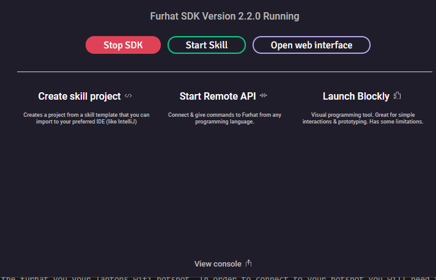
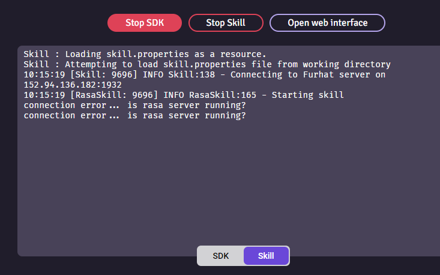

Usage¶
Setting the IP-address of the rasa-server¶
Step 1 for everything is to enter the correct IP for the RASA server. Normally when testing, you will use ‘localhost’ as your address. If you are running over a different network, go to config-file and change IP
You change IP at the top of the file in question. You change the IP in
dagfinn\ui\furhatScreen.index.js
and in
dagfinn\ui\furhat-skills\rasa\src\main\kotlin\furhatos\app\rasa\flow.interaction.kt
const IP = "localhost"
const PORT = "5005"
Remember to recompile after changing IP in interaction.kt
See Making changes to the skill \ kotlin code
Starting RASA server(s)¶
In every case run rasa servers first. Make sure you are standing in the base project folder. And that you are in the virtual environment (dagfinn)
(dagfinn) dagfinn\
Before starting the bot and after every change we need to retrain the bot. This can be done with the command:
rasa train
To run the chatbot you will need two terminals. The first one is for the actions server. You can start it by typing:
rasa run actions
In the second terminal you can start the Rasa server with all defined channels:
rasa run --cors "*"
Running virtual furhat + furhatscreen¶
In order to run the virtual furhat you need to have downloaded the furhat virtual launcher. Go to the following link, you need to LOGIN you access the site.
https://furhat.io/downloads
Choose the virtual launcher of your choice: Mac, linux, windows.
Start the launcher and start the SDK. Then press start skill.
The skill will be located in ui\furhatscreen
The name of the skillfile is:
rasa-all.skill
Now to virtual furhat should be running and connected to rasa.
Running physical furhat + furhatscreen¶
Start the robot by pressing the on button, small button, not the big wheel button. In order to connect to the furhat, your laptop needs to be on the same network.
Guest network¶
By default the furhat is on the guest-network on uis. Go to uis.no and get access to the guest network
https://www.uis.no/en/student/wifi-network
Make sure you are actually connected to the guest-network.
Make sure that the config file points to the correct IP address. Are you running rasa on the laptop, the IP you enter in the config file is your laptop’s IP. Usually something like 10.168.200.5
Wifi Hotspot¶
You can connect the furhat you your laptops wifi hotspot. In order to connect to your hotspot you will need to connect a keyboard to the furhat in order to type the password to hotspot wifi.
Running rasa webchat¶
Running webservers¶
Open a new terminal. Change directory to
dagfinn\ui\webchat
or
dagfinn\ui\furhatscreen
run the command
python -m http.server <port>
You can also omit portnumber and the server will default to port 8000
python -m http.server
or
python -m http.server 9000
in order to run the server on a different port. this can be necessary if you try to run multiple web servers.
Making changes to the skill | kotlin code¶
#recompile
go to folder
ui\furhat-skills\rasa\
run
gradlew shadowJar
the furhat skill will be under
ui\furhat-skills\rasa\build\libs
and is named rasa-all.skill
If you make any changes to the kotlin code, you have to recompile with gradlew shadowJar.
Troubleshooting¶
Always Press Stop SDK, to make sure the SDK stops gracefully. View Console at the bottom of the screen to view the output from 
The furhat can’t find the rasa server, or is otherwise unable to reach the netowork. 